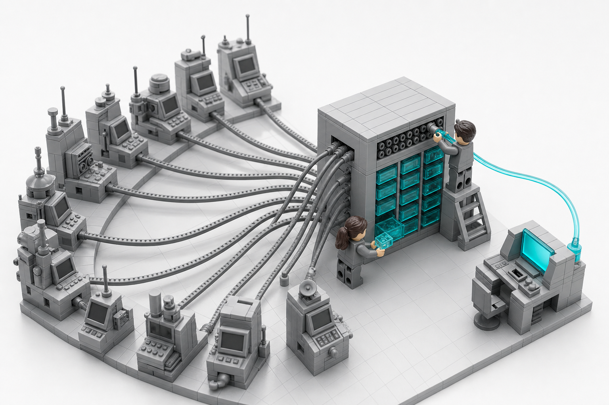
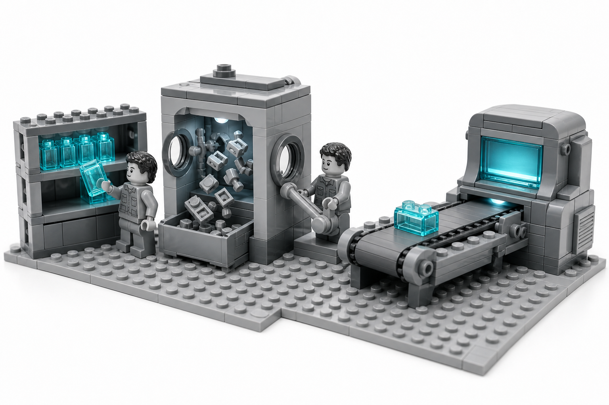

| the grey stations | the provider CLIs — claude, codex, gemini, agy, grok, deepseek, ollama, quick, opencode, cursor |
| teal drawer cabinet | the credential vault: file-swap, token, and endpoint profiles |
| patch panel + one teal cable | active-profile selection — one credential routed per launch |
| workstation, teal screen | the child CLI process caam spawns |

caam run claude: a profile leaves the shelf, is scrubbed clean of ambient auth, and is injected into the freshly started tool.| shelf of teal cartridges | token/endpoint profiles stored in the vault (mode 0600) |
| lifted cartridge | default-profile resolution — .active-token marker, cooldown rotation |
| airlock shedding grey bricks | ambient auth env scrub (ANTHROPIC_*, CLAUDE_CODE_OAUTH_TOKEN, CLAUDE_CONFIG_DIR…) |
| conveyor | env injection: the profile's own CLAUDE_CODE_OAUTH_TOKEN + per-profile CLAUDE_CONFIG_DIR |
| powered-up terminal | the spawned claude child (PTY, rate-limit watch) |
caam run claude — branching and env var names precisely, complementing the diorama above.